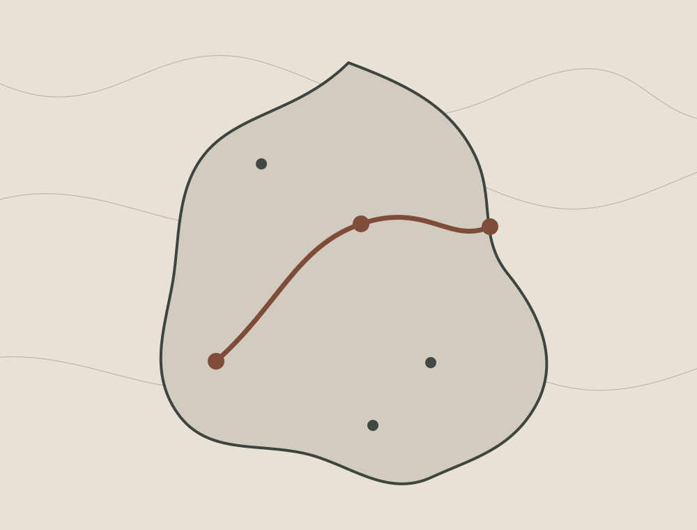

Serra Negra
Passaporte iniciado em 2026.

ViajanteLorenzo · demo
Origem do capítuloSerra Negra, SP
IdiomaPortuguês
Número internoPSN-000127
O Passaporte não é dashboard com decoração. Ele é um objeto colecionável, com páginas, bilhete, carimbos, registros e caminho vivido.
Passaporte iniciado em 2026.

Planejado não vira vivido sozinho. O mapa representa apenas evidências registradas da viagem.
11